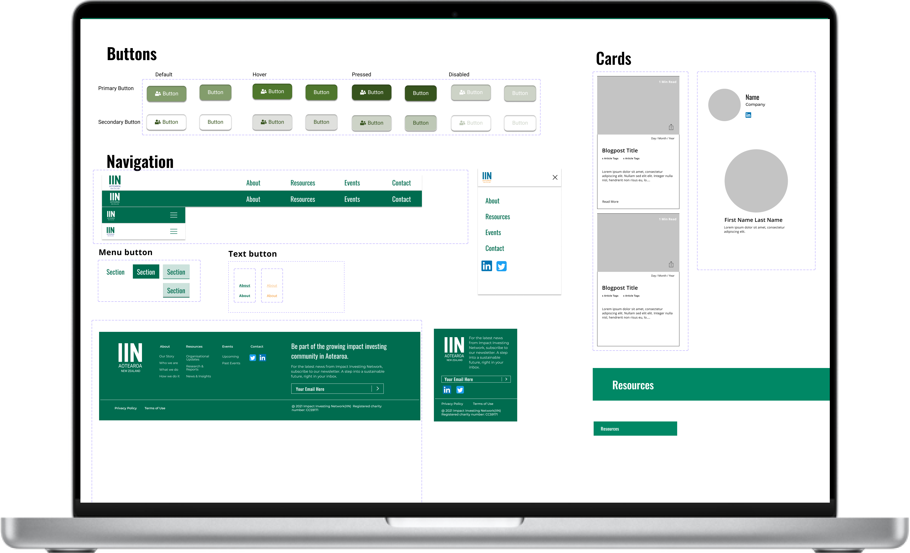

Research
We interviewed current users, mainly investors and people connected with the organisation, to understand pain points and expectations around the site.
Case Study - UX/UI Design
Challenge
Our team of two designers and a front-end developer was asked to improve information architecture, refine visual design, strengthen navigation, and support better outcomes for traffic and newsletter sign-ups.
The existing site had confusing hierarchy, inconsistent UI patterns, poor discoverability, and overlapping content structures that made the experience harder to use than it needed to be.
Discovery
We interviewed current users, mainly investors and people connected with the organisation, to understand pain points and expectations around the site.
A detailed content audit revealed unclear taxonomy, weak hierarchy across team and board pages, limited findability, and overlapping resources and articles.
Card sorting helped us understand how users grouped information, which directly informed a cleaner sitemap and revised navigation model.
Response
We ran concepting in parallel with research and content analysis, then iterated toward a revised sitemap and clearer user flow. The redesign focused on easy access to information, a stronger learning pathway, streamlined contact routes, and better support for newsletter growth and social engagement.
Alongside the structure, we developed a new design system and style guide so the organisation could maintain consistency across content, interactions, and future changes.

Result
The final concept delivered improved navigation, a dedicated news and events pathway, simpler learning resources for new and aspiring investors, and more usable contact options.
The project also reinforced the value of documentation and testing: systems save time later, and careful testing is what turns a redesign into something reliable.